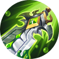
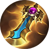
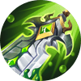
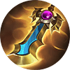

Leader of the Scarlet Sect, in the Scarlet Shadow upon the Cadia Riverlands

story
Sebagai pemilik Higanbana, salah satu dari tujuh senjata besar Klan Bayangan Merah, Hanabi adalah kebanggaan Sekte Scarlet. Untuk melanjutkan kehendak ayahnya, dia telah mencari kekuatan sejak kecil. Akibat dari tujuannya yang tekun, dia menutup dirinya dari segala perasaan dan emosi. Namun demikian, dia tidak pernah benar-benar diterima oleh Higanbana. Suatu kali, ketika dia sedang mengejar mata-mata musuh dan kalah, dia tanpa sengaja masuk ke dalam dunia di dalam Higanbana dan terjebak antara ilusi dan kenyataan. Akhirnya, dia menyadari bahwa kekuatan tanpa emosi adalah sesuatu yang mudah berubah dan fana. Dia menerima dirinya sendiri dan merangkul perasaan dan keinginannya saat dia menyatu dengan Higanbana.
Pantai
Hanabi dulu pernah mendengar kisah.
"Higanbana mekar di pantai, seolah terbakar dalam api. Tidak bisa melepaskan obsesi mereka, jiwa-jiwa yang hilang terjun
ke dalam jurang. Mereka tidak lagi mengingat kehidupan masa lalu mereka, dan masa depan adalah misteri. Mereka tertarik
ke tempat ini, yang mengutuk mereka ke neraka."
—Higanbana, Salah Satu Senjata dari Tujuh Senjata Bayangan Merah
Hanabi mengenal sungai itu dengan baik.
Gelap dan dingin, namun tenang. Dia melayang di atas air seolah terapung di udara. Kabut tebal yang tak terlihat berputar di sekitarnya. Di antara kegelapan, satu-satunya cahaya adalah kelompok Higanbana di kejauhan. Mereka berwarna merah menyala, merah seperti api neraka, seperti api yang membakar di pantai yang jauh sekali untuk dicapainya.
Itu adalah mimpi buruk yang terulang-ulang yang pernah dialami Hanabi sejak dia berusia 7 tahun. Itu adalah tahun ketika, karena bakat bawaannya untuk bercocok tanam, dia tidak sengaja mengaktifkan senjata kuno Scarlet, "Higanbana". Yang dia ingat hanyalah tenggelam oleh senjata itu dan jatuh ke dalam jurang yang luas dan mengerikan. Ketika dia terbangun, matanya penuh dengan air mata, namun meskipun demikian, orang-orang yang telah berkumpul di depannya bersorak dan memberinya selamat atas menjadi orang yang dianggap layak menjadi penerus Scarlet.
Dari semua individu luar biasa dari Sekte Bayangan, Hayabusa adalah yang paling terkemuka. Seperti penampakan, dia akan muncul di kompetisi, dengan cepat mengalahkan lawan-lawannya, dan pergi tanpa mengucapkan sepatah kata pun. Seolah-olah dia bahkan tidak tertarik pada kompetisi. Hanabi sering menemui Hayabusa dan menantangnya bertarung. Saat mereka bertabrakan, keduanya melintasi aliran gunung dan di atas atap alang-alang, pedang mereka bertabrakan dan bersentuhan lebih dari sekali. Namun, pada akhirnya, Hanabi selalu kalah, dan sungai hitam itu mulai membengkak, air mencapai tepiannya. Setiap kali dia kalah, Hanabi, yang penuh dengan rasa pasrah, akan bertanya kepada Hayabusa bagaimana dia berhasil mengalahkannya, dan setiap kali itu semua yang dia lakukan adalah mengangkat bahu dan mengatakan,
"Karena... bulan terlihat cantik malam ini."
Arogansi yang tidak terkendali, dan kelalaian total dari jawabannya membuat Hanabi buta oleh kemarahan. Dia tidak bisa kalah, sama seperti Sekte Scarlet tidak bisa. Dia membenamkan dirinya lebih dalam ke dalam pelatihannya; dia akan melakukan apapun untuk mencapai pantai yang jauh itu.
Lalu, suatu hari, bencana datang.
Hanzo, salah satu ninja terkuat dari Bayangan Scarlet, melarikan diri dengan Ame no Habakiri, menjadikannya musuh dari kedua Sekte Scarlet dan Bayangan. Bersama-sama, kedua sekte itu mengirim prajurit terbaik mereka untuk mengejar Hanzo. Ini adalah pertama kalinya Hanabi bertarung dengan Hayabusa di sisi yang sama, dan dia tidak akan melewatkan kesempatan ini untuk menebus dirinya sendiri. Dia akan melacak Hanzo sendirian, tanpa bantuan dari Hayabusa. Namun, setelah menemukan Hanzo, dia ternyata lebih berbahaya daripada yang Hanabi perkirakan. Tidak mampu menahan serangan langsung dari Ame no Habakiri, Hanabi mendapati dirinya berjuang untuk terus menghindar. Dia bisa merasakan dirinya tergelincir, dan saat pedang itu melintasi lehernya, dia mengingat sungai gelap itu.
Dia tidak bisa kalah, sama seperti Sekte Scarlet tidak bisa. Dia harus menang.
Dengan bersumpah kesetiaan abadi pada Higanbana, Hanabi menawarkan tubuhnya sendiri.
Pada saat kematian, kekuatan besar menerjang Hanabi seperti tsunami yang ganas, dan pada saat itu dia mengerti, Hanzo telah bersumpah kesetiaan pada Ame no Habakiri sebagai imbalan atas kekuatan ini. Tidak ada waktu untuk merenung lebih jauh. Hanabi melonjak menuju Hanzo. Di antara serbuan serangan, potongan, dan tusukan, penglihatan Hanabi mulai buram, tapi dia bisa melihat lawannya tersandung mundur. Dia telah menang! Namun, air mulai menyembur maju, dan dia sekali lagi menemukan dirinya tenggelam di sungai gelap yang familiar itu.
Jauh dari mereda, sungai justru berkecamuk dengan kemarahan yang lebih besar saat gelombang-gelombang raksasa terus menerus menghantam satu demi satu, menarik Hanabi ke dasar sungai. Begitulah nasib dari banyak jiwa yang telah disegel dalam senjata ini. Setiap rasa sakit dan kebencian mereka berubah menjadi kekuatan yang tak teratasi yang memperbudak semua yang masuk, membuat mereka terjebak selamanya di dalamnya. Ini adalah tanah orang mati, sebuah tanah dari mana tidak ada pelarian.
Menang! Menang! Menang!
Suara gemuruh ombak bergema di telinganya, suara itu hampir menyerupai paduan suara. Dia berjuang sekuat tenaga, tapi Hanabi tidak mampu melepaskan diri. Bunga yang terbakar yang dulu begitu jauh sekarang begitu dekat, namun masih, tetap di luar jangkauannya. Perlahan-lahan, dia merasa tenggelam lebih dalam...
Hanabi! Hanabi! Hanabi!
Suara Hayabusa menusuk hampa, membawa Hanabi kembali dari ambang batas. Mengabaikan jiwa-jiwa mati yang merangkul lehernya, dia mengangkat kepalanya.
Cahaya bulan terpantul di permukaan sungai. Itu indah.
Apa yang dulu gelap murni sekarang terkena cahaya. Orang mati mundur, dan air yang berkecamuk mereda sampai semuanya tenang. Pemimpin Scarlet pertama adalah pemilik asli Senjata. Dalam pengejaran kekuasaan yang tak kenal lelah, dia tidak ada di sana untuk istrinya di saat-saat terakhirnya. Dunia adalah miliknya, tapi dia telah kehilangan segalanya. Oleh karena itu, Dia menjadi gila. Dalam kegilaannya, dia menyegel semua kekuatannya, dan semua kesedihannya, dalam Higanbana.
Akhirnya, Hanabi bisa melihat bahwa pantai tidak lagi jauh. Itu terletak di depan matanya. Dia telah menang. Di kejauhan, dia memandang bunga-bunga yang tumbuh di ujung sungai. Tersembunyi di antara mereka, dia bisa melihat siluet samar dari pemimpin Scarlet pertama dan istrinya, berdiri berdampingan di bawah cahaya bulan. Bayangan Scarlet telah mengorbankan segalanya untuk kemenangan. Sekarang, pada saat ini, jelas bahwa pengorbanan mereka tidak sia-sia.
Saat Hanabi perlahan-lahan menyadari dirinya, Hayabusa membawanya pergi, sementara Hanzo berhasil melarikan diri. Mereka tidak dalam keadaan untuk mengejar, tapi ini hanyalah sebuah kemunduran kecil, tidak lebih.
Higanbana beristirahat dengan lembut di tangan Hanabi. Dia telah membuka rahasia-rahasianya dan menjadi pemiliknya. Bebas dari obsesinya dan setan dalam dirinya, Hanabi akhirnya bisa melihat Hayabusa, lawan lamanya, dengan jelas untuk pertama kalinya. Dia akhirnya mengerti apa yang selalu dia katakan padanya: ada hal-hal di dunia ini yang lebih berharga daripada menang.
Meskipun dia tidak yakin bagaimana langkah selanjutnya, dia juga tahu dia tidak lagi memerlukan bimbingan dari orang lain. Tidak peduli arah mana yang dia ambil, semua jalan mengarah ke pantainya.
 


